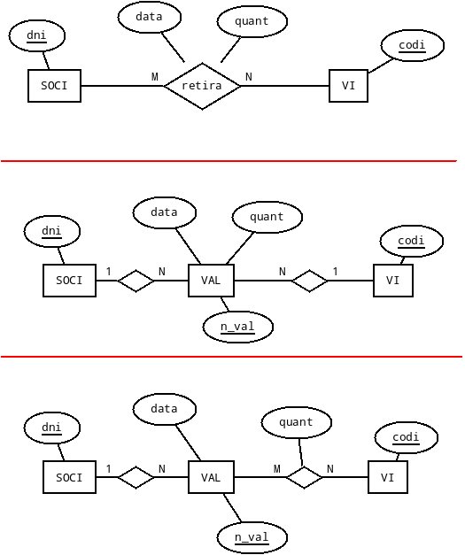
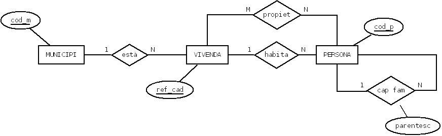
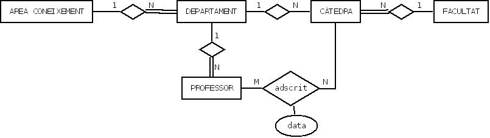
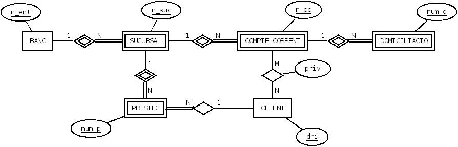
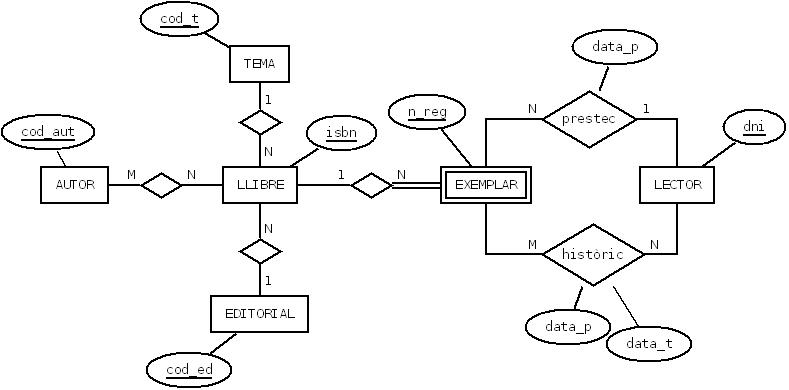
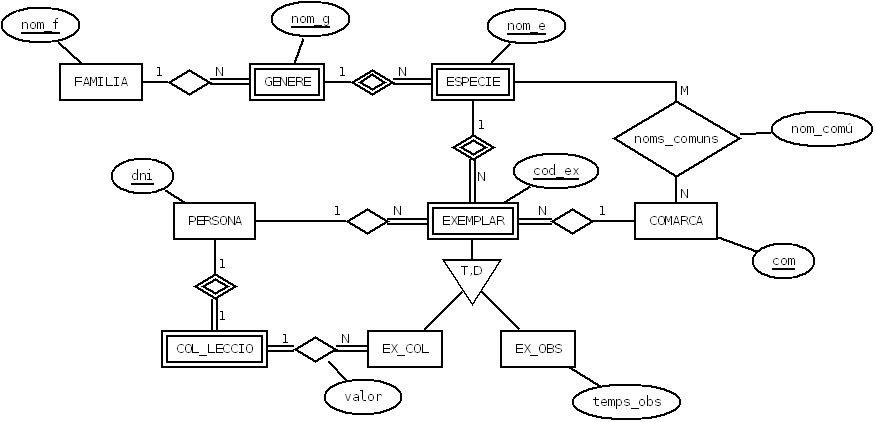
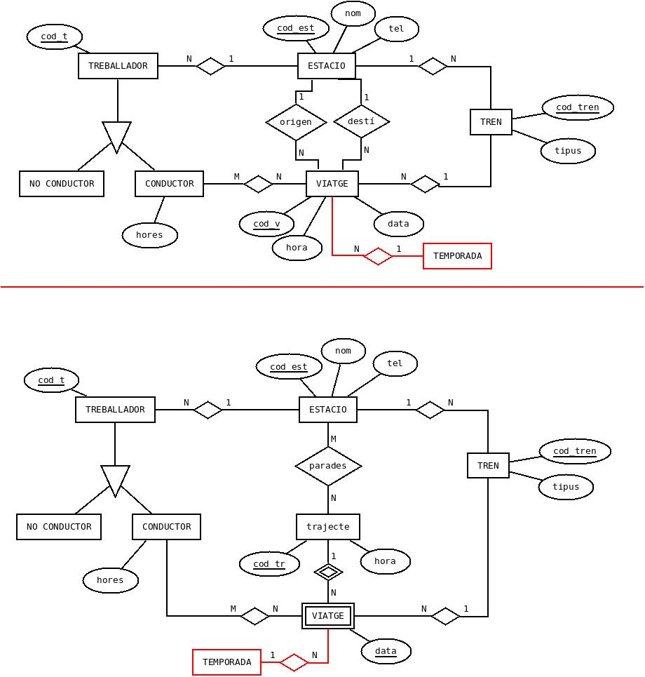
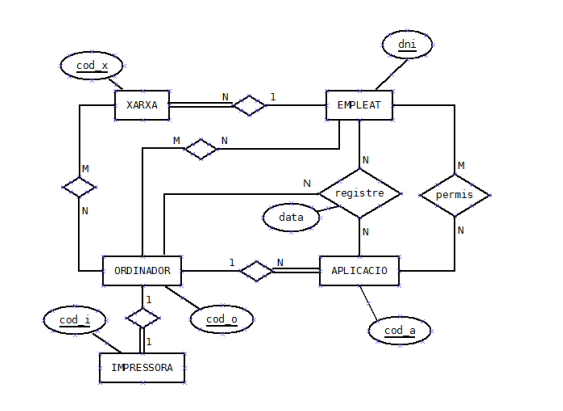
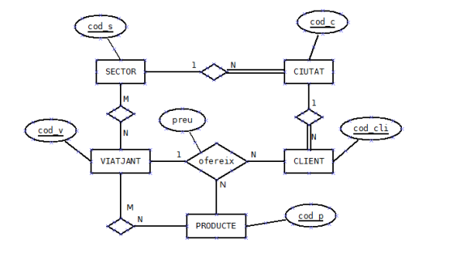
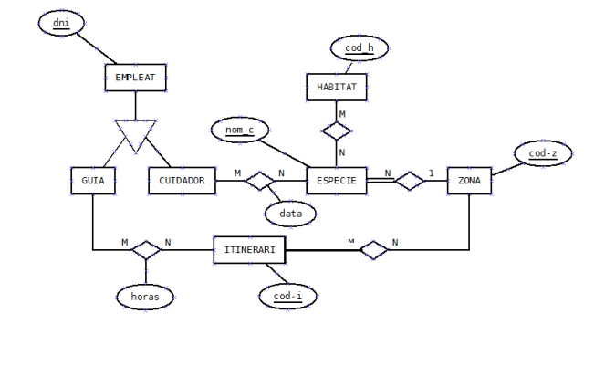

6. Exercicis
 Exercici 1
Exercici 1
Realitzar l'esquema relacional corresponent a l'exercici 1 del Tema 2.
Recordeu que teníem 3 opcions:

Exercici 2
Realitzar l'esquema relacional corresponent a l'exercici 2 del Tema 2.

Exercici 3
Realitzar l'esquema relacional corresponent a l'exercici 3 del Tema 2.

Exercici 4
Realitzar l'esquema relacional corresponent a l'exercici 4 del Tema 2. Recordeu que el rombe amb doble ratlla significa dependència en identificació;

Exercici 5
Realitzar l'esquema relacional corresponent a l'exercici 5 del Tema 2.

Exercici 6
Realitzar l'esquema relacional corresponent a l'exercici 6 del Tema 2.

Exercici 7
Realitzar l'esquema relacional corresponent a una empresa de línies ferroviàries.
En la de dalt considerem únicament els viatges (i no els trajectes). A més, només marquem estació d'origen i de destí d'un viatge.
En la segona incorporem els trajectes, i a més marquem totes les estacions on es para en un trajecte.

Exercici 8
Realitzar l'esquema relacional corresponent a un sistema d'informació sobre el material informàtic d'una empresa.

Exercici 9
Realitzar l'esquema relacional corresponent a un sistema d'informació d'una empresa que ven gran varietat de productes. Per a la venda d'aquestos productes, disposa d'un conjunt de viatjants que realitzen visites als clients oferint els seus productes.

Exercici 10
Realitzar l'esquema relacional corresponent a un Parc Zoològic que vol guardar informació de les espècies que té, els empleats (cuidadors i guies), i els distints itineraris de visita que ofrereix.

Llicenciat sota la Llicència Creative Commons Reconeixement NoComercial CompartirIgual 3.0